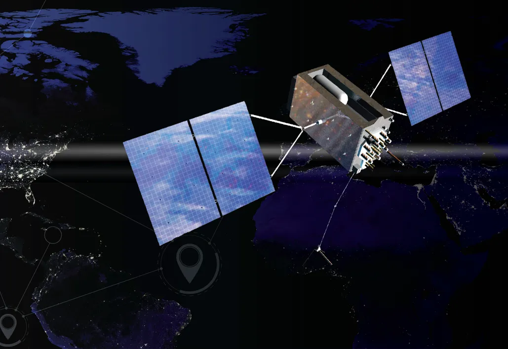
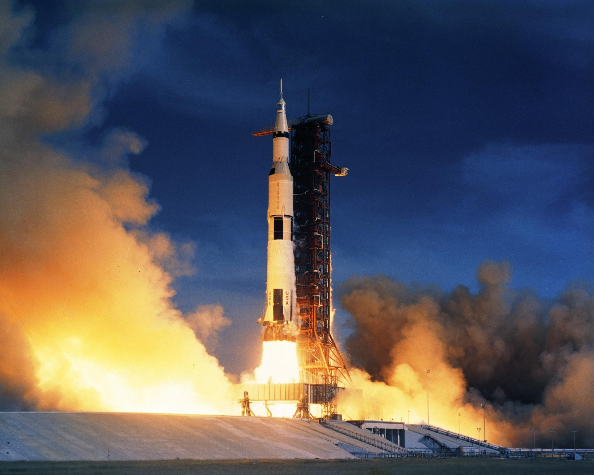

Why Fund NASA?
NASA is not just about space—it’s about science, security, innovation, and staying ahead. With rising global competition, particularly from China and other emerging space powers, America cannot afford to lag in aerospace leadership. Funding NASA is not optional—it's strategic.
- Economic Return: Every $1 in NASA yields $10 in the economy.
- National Security: NASA technologies support defense operations and secure satellite communications.
- Climate Monitoring: Real-time tracking of environmental and disaster data worldwide.
Did You Know?

Watch the impact it has on society
Innovation Powerhouse
NASA pioneered remote sensing, AI systems for autonomous navigation, and even water purification tech. These breakthroughs don’t just support astronauts—they make your everyday life better. Everyone's tax dollars are making a difference from hospital devices to GPS.
Discovery That Expands Humanity

NASA fuels discovery—answering cosmic questions, pushing the bounds of science, and inspiring humanity to reach further. From exoplanets to galaxies billions of years old, this is how we prepare to expand the human race beyond Earth.
If you’re still not convinced by the scientific, economic, or humanitarian value of NASA—then consider this: in the 1960s, we beat the Russians to the Moon. Now, China is rapidly closing the gap. The U.S. must continue to lead.
Take Action
Tell your representative that America leads when NASA leads. Click below to show your support.